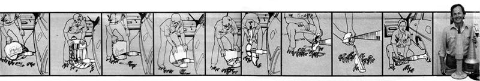

(Well, at least successful and famous)
These drawings--based on a much longer series of color photographs that in MOTHER NO. 41--show how the Sticker really "chews'em up" And ,improved model (see photograph) is, if anything, even better!
What happens if you start a small business which makes a product (a low-cost, high-capacity log splitter) designed to help people live simpler, more self-sufficient lives?
Well, I can tell you what happens if that product suddenly appears on the cover of THE Mother Earth News©. You end up dealing with seven lawyers, three CPA's, one computer, and forty employees!
Taos Equipment was formed a little over two years ago in a two-car adobe garage 14 miles south of Taos, New Mexico. The company now operates out of 40,000 square feet (including a new plant in Albuquerque), and we're working with a very much larger corporation (Arnold Industries of Toledo, Ohio) that provides the technical, financial, and marketing support we need to manufacture and sell our log splitter throughout the world.
We really didn't expect all this to happen. My partner, Larry Krogness, and I were both dropout firewood dealers when we started the business. He had been a machinist and mechanic. I had been a college English teacher and a journalist. We had both moved to Taos for the usual reasons: We wanted to live simpler, more self-sufficient lives.
We began our manufacturing operation as an offshoot of our firewood business when we started making and selling very expensive hydraulic log splitters. Our production equipment consisted of some hand tools and a steel cut-off saw bought on credit. We did not indulge in any careful planning . . . and so . . . . we immediately . . . . . began to lose money . . . . . . with great simplicity and self-sufficiency.
Then, early last year, we started producing The Stickler . . . an inexpensive (compared to the hydraulic splitters-including our own-on the market) and very effective log splitter that almost anyone could afford to buy and operate. And even more important, the editors of THE Mother Earth News featured our new splitter on the cover of the September-October 1976 issue of the magazine (MOTHER NO. 41).
Largely as a result of that single cover story, we now operate so much manufacturing equipment that, if we turn it all on at once, we risk dimming the lights at the local junior high school.
It's all MOTHER's fault! The Stickler alone made no dramatic changes in our business or in our way of life. We produced and sold Sticklers for eight months prior to MOTHER's article with only modest success. By "modest success" I mean that during August 1976the last (and most successful) of those eight months -we sold something over 200 of the units on-for the first time-a just-slightlybetter-than-break-even basis.
And then MOTHER NO. 41 appeared on September 1 . . . a date which will always be revered as our company's own Fourth of July. (September 1, 1976 did not, however, signify our independence. Quite the contrary! It began a period of almost overwhelming obligation to the filling of a demand for a product that can make other people's lives a little more simple, selfsufficient, and independent. Other people's. Not ours.)
I clearly remember tracking the geographic movement of MOTHER NO. 41 as it was distributed during that first week of September. The issue obviously appeared first in the East, because our one measly telephone line was suddenly jammed far into the night with eastern distributors and dealers who were trying to buy Sticklers.
And not just dealers and distributors. Back-to-the-land folk straggled out of the Vermont and Maine woods ... down off Virginia and North Carolina mountains . . . and up out of Florida swamps, found the nearest phone booth, and tried to telephone in an order for a Stickler.
All that most of these people got in September were busy signals and a lot of aggravation. So they just sent their money in by mail.
We were amazed by y(our) magazine's credibility! MOTHER had reported that this contraption-this ... this ... giant screw, for crying out loud, that bolts onto the rear hub of a vehicle and splits wood-actually works. And that's all it took. MOTHER's word was good enough.
0 People ail over the East read it and immediately began sending one hundred and ninety-nine dollars through the mail for an unseen and (when you think about it) totally preposterous device.
Within a few days, we could see MOTHER NO. 41 moving west. We were exhilarated! MOTHER had put us in business! The magazine hadn't even reached the Mississippi yet and we were already a thousand units behind!
And then we started getting calls from Missouri and Arkansas ... and my exhilaration began to turn to a growing lump of cold panic 'way down deep in the pit of my stomach. "No!" I thought. "It's moving toward us." I imagined hordes of angry, organically fed MOTHER subscribers descending on us during the coming week . . . each of them armed with 199 ragged dollars acquired in trade for the year's corn crop.
Well, I have to admit that we had been warned by MOTHER's editors. As a matter of fact, they'd even warned MOTHER's readers when-in that September-October article-they'd written that "anyone else who intends to burn wood this winter is well advised to get his or her order for a Stickler in early. Because once 'they' find out how good this thing is, we just know that Taos is gonna have one devil of a time keeping up with demand".
But perhaps even the editors of MOTHER failed to realize just how many of the magazine's readers would be galvanized into action by that article. By the end of September, we were 3,000 units back ordered . . . and the calls and letters were still coming in.
This response was really an eye-opener for us. Here at Taos Equipment we had known that THE Mother Earth News encourages people to develop simpler, backto-basics, planet-oriented ways of life. We had not realized, however, just how well MOTHER has done her job. But take our word for it, we know now! There are literally hundreds of thousands of dedicated MOTHER readers out there who have made a commitment to the oldtime values of selfsufficiency, doing more with less, and living lighter on the earth (heating with wood, for instance, instead of with electricity, gas, or oil).
We had known, of course, that a $199 device capable of splitting out $75 worth of wood an hour on less than a dollar's worth of gasoline could be of tremendous help to anyone (especially if he or she didn't have the strength or stamina of a north woods lumberjack) trying to provide him or her self with a renewable source of fuel. It's just that we didn't know how many of you there are out there. MOTHER certainly showed us and helped us find each other.
By the time we began to realize the true extent of the demand for our product, we had already run head-on into the major complication that has accompanied that demand: namely, our location in a distinctly non-industrial area. I have since learned that this is a very common problem among backwoods tinkerers who develop good energy-related hardware. But in our case, the complications have been even worse than usual.
Taos, New Mexico is a remote, 7,000foothigh mountain town of about 3,000 distinctly non-industrial people. It's one of the worst places in the country to try to produce a steel product, simply because the flow of materials is so difficult to arrange. This has been the case for centuries. An ancient Mesopotamian design for a wooden door hinge (known as a pintle), for instance, still survives in this region simply because of the extreme difficulty and expense of bringing in any iron products right up to the last century. The 19thcentury wills of wealthy Taos residents sometimes even divided bars of iron among heirs, because of its local rarity and value.
We sometimes feel that this traditional situation hasn't changed much. Especially when lost Texas truck drivers (hauling longawaited loads of steel) call from distant locations to ask, "Where the hell are y'all at up there?"
Our new Albuquerque facility has greatly reduced these shipping problems. But the intense response we've received from that year-ago MOTHER article (and from our subsequent ads in the magazine) have made it clear that we're going to need a lot of help if we're serious about supplying the demand for our splitter.
And that's why we began discussing the problems of our success with Arnold Industries of Toledo, Ohio last February. And-thanks to Arnold's technical, financial, and marketing help-we're now selling Sticklers all over the world
But will success spoil Taos Equipment? Is Arnold Industries a grasping corporate octopus out to consume our little company? Will the quality of the Stickler be cut so that we can "cash in" on its popularity? We think not. In fact, we're sometimes amazed that, as the old saying goes, "the more things have changed for us, the more they've stayed the same".
Taos Equipment has certainly retained a great deal of its "alternative life" flavor. At least we're still eating far more goat yogurt from Mason jars for lunch than is usually consumed in most business offices. And everyone understands when Tish Demmin occasionally arrives late for work, wearing a rather haggard look: She's the local midwife and has 64 singlehanded deliveries behind her.
And Arnold Industries? Well, our most important contact there is George Blackstone, 28, president and son of the firm's founder. George is a very savvy businessman . . . but he can also be found occasionally tinkering with a pyramid model in his office, testing its preservative effects on bananas. George is all right.
As for the Stickler itself: So far, we've plowed most of the money that Taos Equipment has made (and will make for a long time) into setting up production and quality control facilities capable of handling the demand for the splitter. We've also completely redesigned the basic product, so that it'll perform even better than our first versions. We've even invested heavily in the development of variations on the basic unit--tractormounted PTO (power takeoff) splitters, self-powered units, garden tractor models, etc--that a good many of you folks have asked for.
In every important respect, then, we feel that Taos Equipment is still pretty much the same as it was before MOTHER's article rocketed it to "stardom". And we're very comfortable with our relationship with Arnold Industries. And we believe that the Stickler we're manufacturing right now is the best Stickler we've ever made ... and that tomorrow's Stickler will be even better.
In general, then, we're happy about our MOTHER-induced success ... even though Larry and I are both a lot grayer now than we were when we began manufacturing log splitters in that adobe garage. We're both currently farther in debt than we ever imagined possible . . . but we hope to turn the corner soon and start making a profit from our efforts. I now spend more and more time reading books like Small is Beautiful (see The Plowboy Interview in MOTHER N0. 42) so we'll know how to distribute Taos Equipment's profits among our employees fairly when that day comes.
In the meantime, we're very grateful to THE Mother Earth News for the unique way in which it has drawn together such a deliberately and sensibly scattered-and large-group of back-to-basics people.
And we're extremely grateful to all you nice folks who've purchased and who now use our Stickler log splitter. You've taught us-contrary to what some misguided people have been saying for the past few yearsthat "business" doesn't necessarily have to be bad. Judging from your testimonials, when it helps put a good product into the hands of thousands of individuals and families who really need it, "business" can be something very worthwhile and good indeed. Thanks for proving that to us.
When you get right down to it, then, Larry and I have only one real complaint about all the success that you MOTHER readers have heaped on us: We've been so busy trying to supply you with Sticklers this past year that we haven't had enough time for ourselves and our families to cut our own firewood. Even with a Stickler! And that's what we came to Taos for in the first place. Maybe this year we'll get caught up a little and . . . .
David Kimball is the sales manager of Taos Equipment Manufacturers, Inc., Box 1565, Taos, New Mexico 87571. Further information about the Stickler log splitter can be obtained-or an order placed-by writing to Mr. Kimball at that address.The Editors.
|
 Photo By Tony Holmes |
|
|